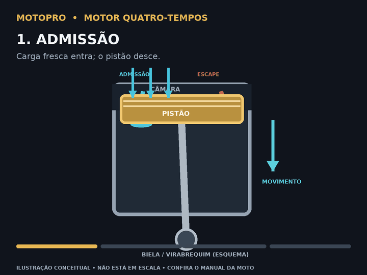

Biblioteca didática de mecânica, elétrica, eletrônica e injeção de motocicletas. Consulte por sistema ou componente — e confira sempre a aplicação exata.
Explore conjuntos e componentes por função. As imagens são esquemáticas; detalhes de montagem e medidas dependem do motor identificado.
Animação esquemática para compreensão geral; não representa sincronismo ou especificação de uma moto particular.
